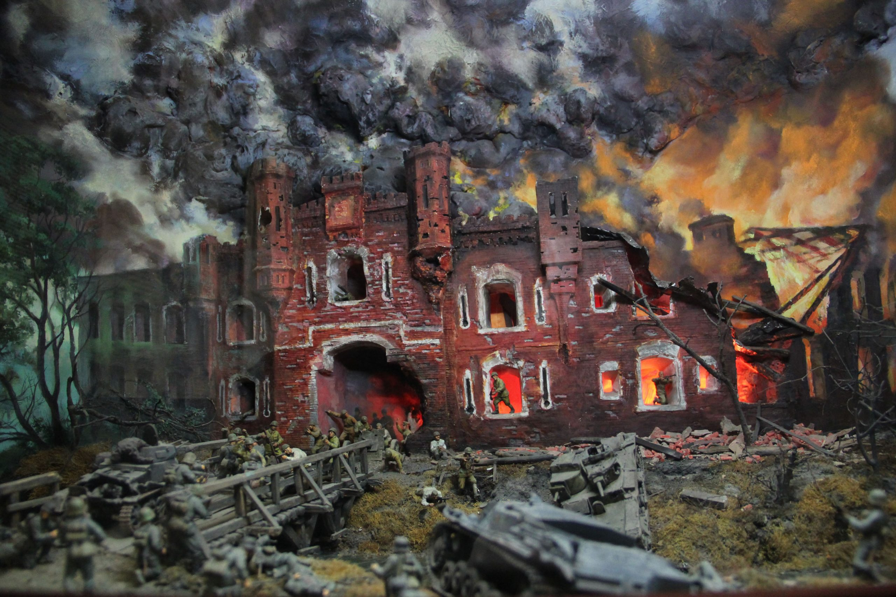
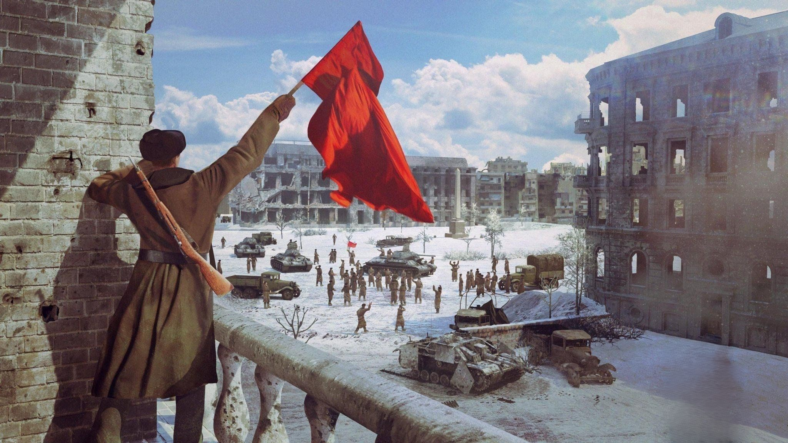
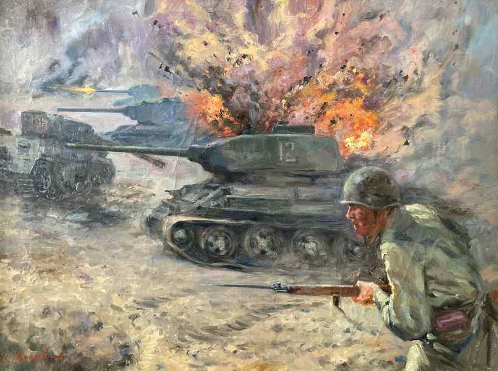
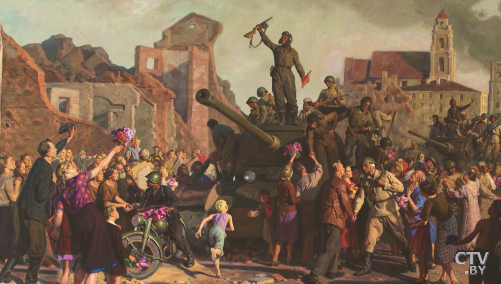
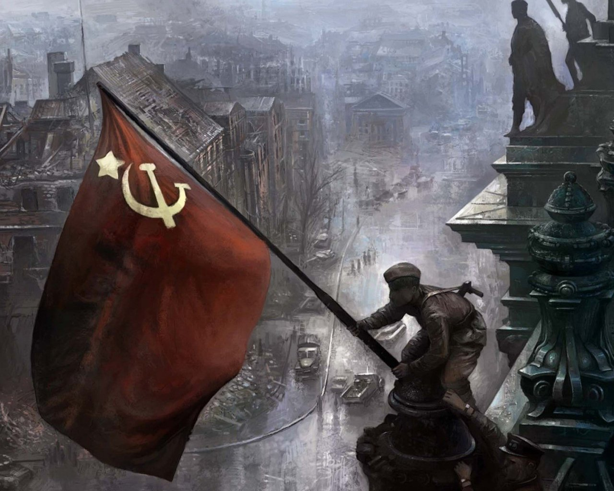
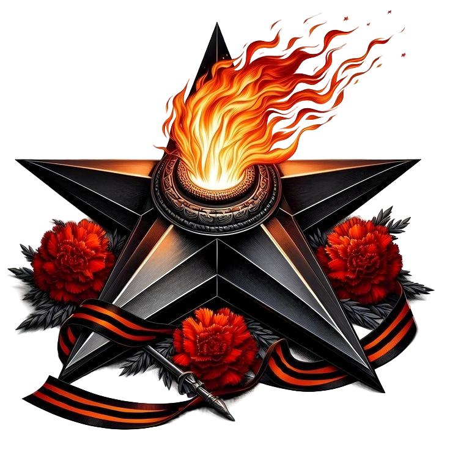

Летопись Великой Победы
1941

ГРОЗА НАД ГРАНИЦЕЙ
ИЮНЬ – ДЕКАБРЬ 1941
Первые удары, трагедия отступления и рождение гвардии под стенами Москвы.
1942

ВЕЛИКОЕ ПРОТИВОСТОЯНИЕ
ЯНВАРЬ – ДЕКАБРЬ 1942
Битва за Волгу, «Ни шагу назад!» и ледяное дыхание блокадного Ленинграда.
1943

КОРЕННОЙ ПЕРЕЛОМ
ЯНВАРЬ – ДЕКАБРЬ 1943
Курская дуга, форсирование Днепра и начало освобождения захваченных земель.
1944

ОСВОБОЖДЕНИЕ ЕВРОПЫ
ЯНВАРЬ – ДЕКАБРЬ 1944
Десять сталинских ударов, операция «Багратион» и выход к границам Германии.
1945

ПОБЕДНЫЙ ФИНАЛ
ЯНВАРЬ – МАЙ 1945
Висло-Одерская операция, штурм Берлина и конец нацистского режима.
ИТОГИ

НАСЛЕДИЕ ГЕРОЕВ
ПАМЯТЬ ПОКОЛЕНИЙ
Анализ потерь, значение подвига и мирное небо над головой.